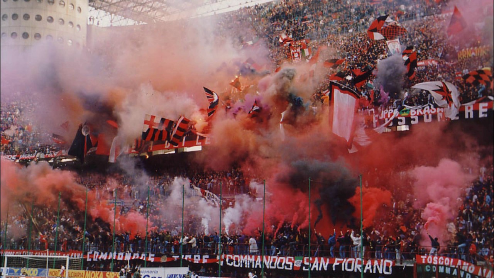

Los himnos son para los equipos de fútbol grandes baulartes de la unión entre la afición y el club. Son una seña de identidad en toda regla y, en el mundo, existen himnos de una grandísima calidad.
Los himnos de la Serie A son canciones oficiales que representan a cada uno de los 20 equipos que compiten en la liga italiana de fútbol. Cada himno es único y está diseñado para reflejar la historia, la cultura y los valores del equipo al que representa.
Los himnos se tocan antes de cada partido en el estadio del equipo local y son una parte importante de la experiencia del fútbol italiano. Los aficionados cantan junto con el himno, mostrando su apoyo al equipo y creando un ambiente emocionante en el estadio.
En la Serie A los himnos juegan un papel fundamental en cada partido, los equipos usan tal cantico para poder intimidar al rival a traves de su aficion y sus hinchas. 